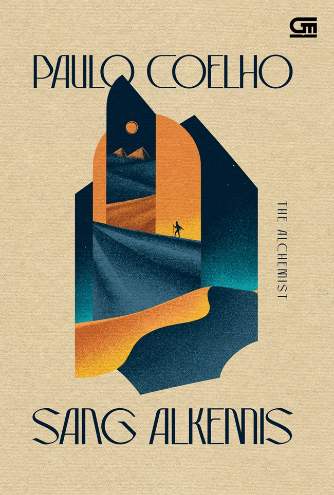

Book Review: The Alchemist by
Paulo Coelho

I read The Alchemist by Paulo Coelho some time ago, and it left a simple yet meaningful impression on me. The story follows Santiago,
a shepherd who decides to leave his comfort zone to pursue his dream of finding treasure. At first, the story feels like a straightforward
journey, but as I read further, I realized that it carries deeper messages about life, courage, and self-discovery.
What I found interesting is how the book talks about following your dreams, or what it calls a “Personal Legend.” It reminds me that
everyone has their own path, but not everyone has the courage to pursue it. Santiago’s journey is not easy—he faces uncertainty, fear,
and failure—but those challenges are exactly what shape his growth. This made me reflect on my own journey, especially as a student who
is still figuring things out step by step.
One thing I really like about this book is how simple the writing is, yet it feels meaningful. It doesn’t use complicated language, but the
message is clear and relatable. Some parts feel almost philosophical, especially when it talks about listening to your heart and recognizing
opportunities in life. It made me realize that sometimes, we already know what we want, but we hesitate because of fear.
Personally, this book resonates with me as someone who is still learning and growing. As an introvert, I often prefer staying in my comfort
zone, but The Alchemist reminds me that growth happens when we are willing to take small steps outside of it. It also connects to my journey
in learning technology—where progress can feel slow, but every step still matters.
Overall, The Alchemist is not just a story about finding treasure, but about understanding yourself and trusting your journey. It’s a light read,
but it stays with you after you finish it. I think this book is worth reading, especially for anyone who feels lost, unmotivated, or unsure
about their path.
In the end, what I learned from this book is simple: sometimes, the journey itself is the real treasure.
← Kembali ke Blog
|